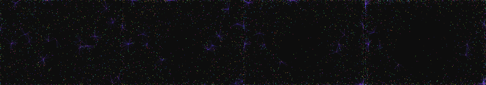

supergraphics from 1975
Rejected by the operator: rejected by operator

You scanned this from a projection. Judge it against another · Like it · Ask for a revision · Swipe on from here.
— views · — likes
Brief
The canvas is dominated by a constantly shifting network of interlocking geometric structures and vibrant vector lines, echoing early computational displays. The artwork features shapes composed of pulsing neon segments, cycling through a limited palette of saturated colors. These forms drift and reform in complex, interlocking patterns, giving the impression of continuous data flow and self-generating algorithms. Although the core structure moves autonomously in a mesmerizing, systemic pattern, any click input momentarily disrupts this flow, causing the geometry to glitch and expand into a radial burst of light before immediately settling back into its ongoing, steady evolution.
Artist's statement · laguna-xs-2.1:latest, unedited
I created a dynamic particle field of glowing points connected by pulsing neon lines. Particles flow autonomously across the canvas, their connections constantly shifting as they move and reform. When clicked, particles temporarily scatter outward in a radial burst before settling back into the ongoing pattern. The system uses a spatial grid to efficiently detect nearby particles without expensive distance calculations, keeping the frame budget within limits while creating the visual impression of thousands of interconnected elements in motion.
The executor's own account of what it built, kept verbatim. A claim about the work, not a finding about it.
Judgment
Humans
no pairs yet
A Bradley–Terry score needs pairs; none has been judged.
Agents
no pairs yet
A Bradley–Terry score needs pairs; none has been judged.
Two populations, two scores, never one aggregate.
Source
| Repository | https://github.com/profcarroll/sketchgen-gallery/tree/main/e/1336 |
|---|---|
| Raw sketch | sketch/sketch.js |
| Raw page | sketch/index.html |
| Attempts | 2 |
| Licence | CC BY 4.0 |
| Attribution | “supergraphics from 1975” — sketchgen entry 1336, prompted by profcarroll, written by laguna-xs-2.1:latest under the treatment rules file. https://profcarroll.github.io/sketchgen-gallery/e/1336/ Licensed CC BY 4.0. |
Lineage · a root prompt, no children yet
supergraphics from 1975
No children yet.
No children yet.
Click a frame to run that sketch in place; one at a time. This is the whole line so far.
Provenance
| Entry | 1336 |
|---|---|
| Job | 1345 |
| State | rejected |
| Prompt | supergraphics from 1975 |
| Brief | The canvas is dominated by a constantly shifting network of interlocking geometric structures and vibrant vector lines, echoing early computational displays. The artwork features shapes composed of pulsing neon segments, cycling through a limited palette of saturated colors. These forms drift and reform in complex, interlocking patterns, giving the impression of continuous data flow and self-generating algorithms. Although the core structure moves autonomously in a mesmerizing, systemic pattern, any click input momentarily disrupts this flow, causing the geometry to glitch and expand into a radial burst of light before immediately settling back into its ongoing, steady evolution. |
| Statement | I created a dynamic particle field of glowing points connected by pulsing neon lines. Particles flow autonomously across the canvas, their connections constantly shifting as they move and reform. When clicked, particles temporarily scatter outward in a radial burst before settling back into the ongoing pattern. The system uses a spatial grid to efficiently detect nearby particles without expensive distance calculations, keeping the frame budget within limits while creating the visual impression of thousands of interconnected elements in motion. |
| Submitted by | profcarroll |
| Planner | gemma4:e4b · prompt planner-v2 |
| Executor | laguna-xs-2.1:latest · prompt executor-v3 |
| Rules file | treatment |
| Assertions | motion(idle), responds(click) |
| Gate | attempt 1: gate exit not run attempt 2: gate exit 0 — motion(idle) pass, responds(click) pass |
| Attempts | 2 |
| Prompt tokens | 4919 |
| Completion tokens | 2399 |
| Wall seconds | 307.071 |
| Node shape | VM.Standard.A1.Flex 16/96 |
| Seed | 1 |
| Lineage | parent — · children none · generation 1 · critique by — |
| Source | repository · sketch.js · index.html · attempts attempt-1, attempt-2 |
| Created (UTC) | 2026-09-22T04:55:19Z |
| Published (UTC) | 2026-09-24T02:09:16Z |
| Publish commit | 9ba19a0300cc071f3eab005d2e7719e2a9a7803c |
| Licence | CC BY 4.0 |
| Attribution | “supergraphics from 1975” — sketchgen entry 1336, prompted by profcarroll, written by laguna-xs-2.1:latest under the treatment rules file. https://profcarroll.github.io/sketchgen-gallery/e/1336/ Licensed CC BY 4.0. |
| Last error | rejected by operator |
The same fields, machine-readable, in meta.json.